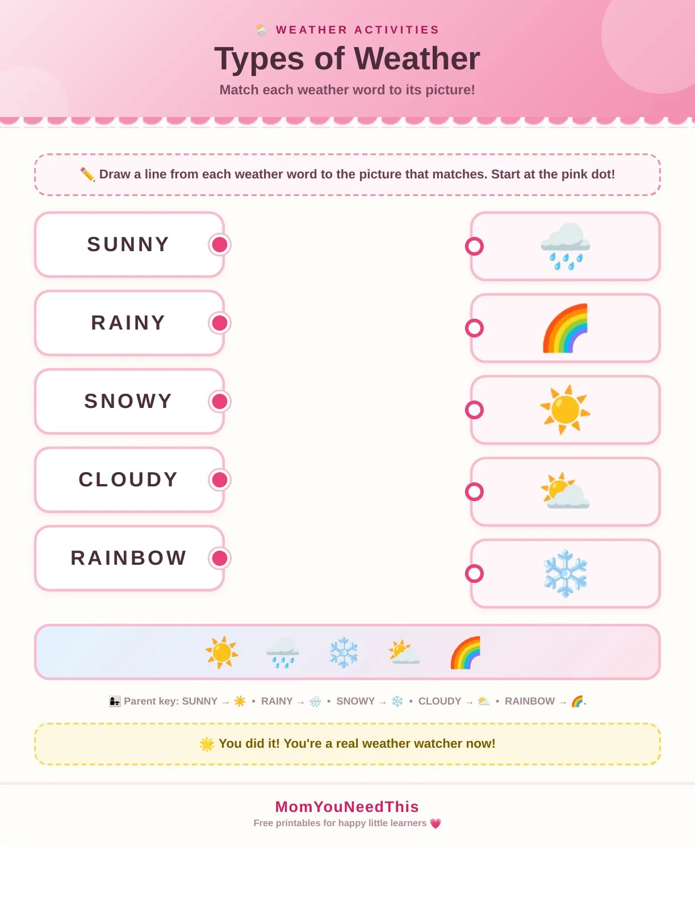

☀️🌧️ Weather Types Sunny, Rainy & Everything Between
What is the weather like today? These activities help children name different kinds of weather, dress for the day, and notice the sky changing around them.
Quick Answer
This free printable weather types activity helps toddlers and preschoolers (ages 2–5) learn the main kinds of weather — sunny, cloudy, rainy, snowy, windy and stormy — and what each one means for getting dressed and going outside. Kids match weather to clothing, identify weather types in pictures, and track a whole week of weather. Download and print at home with no signup needed.
At a Glance
- Ages: Toddlers and preschoolers (ages 2–5)
- Activity: Matching weather to clothing; tracking a week of weather
- Skills: Weather identification and daily observation
- Format: Printable worksheet (PDF)
- Cost: Free, no signup
Weather is a perfect first science topic because the laboratory is right outside the window and it changes every day. A child who can say “today is windy, so my hat might blow away” is doing real observation and prediction — and the week-long tracking built into these pages turns that daily glance into a habit of noticing.
☀️🌧️ Explore Weather Types
Match weather to clothing, identify weather types, and track the weather across a week.
💡 How To Use This Activity
Print the weather pages and run them as a week of morning reports: check the sky, choose today's weather together, and dress a paper figure to match. By Friday, your child will be delivering the forecast — and dressing themselves by it — solo. The print button opens the full-size page in a new tab if you prefer to print from there.

🖨️ Download Your Free Weather Types Printable
Match weather to clothing, identify weather types, and track the weather across a week. Print it out, grab the crayons, and you're ready — no signup needed.
⬇️ Download Free Printable 🖨️ Print🎁 Free printable for toddlers & preschoolers
🌦️ The Weather Types Your Child Will Meet
Sunny — the sun is out and the sky is mostly clear. Sunglasses, hats, sunscreen. Shadows are sharp and everything is bright.
Cloudy — clouds cover much of the sky and the light goes soft and gray. No rain yet — but the sky is thinking about it.
Rainy — water falling from clouds. Boots, raincoats, umbrellas — and the best puddles of the week afterward.
Snowy — rain's cold cousin: soft flakes that pile up white. Mittens, hats, and clothes in layers.
Windy — moving air you can feel and hear: trees sway, leaves race, hats escape. A jacket that zips, not buttons.
Stormy — rain plus thunder and lightning. Storms are watched from indoors, always — the one weather type whose activity is “stay in and look out the window.”
People whose job is studying weather are called meteorologists — a satisfyingly enormous word for a preschooler to own. After a week of morning reports, your child has genuinely done the first part of their job: observing the sky and reporting what it is doing.
❓ Weather Types FAQs
What activities are included in Weather Types?
This page collects our free weather types printables in one place: matching weather to the right clothing, identifying sunny, cloudy, rainy, snowy, windy and stormy weather in pictures, and a week-long weather tracker for daily morning reports. Download the printable below and start learning right away.
Are these activities really free?
Yes — every printable on MomYouNeedThis is 100% free to download and print. No signup, no payment, just tap the download button. The weather tracker page is worth printing several times — one per week — since the sky rarely repeats itself. The weather tracker page is worth printing several times — one per week — since the sky rarely repeats itself.
How do I use these activities with my child?
Run it as a morning routine. Each day, check the sky together, name today's weather, and dress a paper figure (or your child) to match — then mark the tracker. By Friday, let your child deliver the report solo. Short, daily and playful beats one long session, and the dressing practice transfers to real mornings immediately.